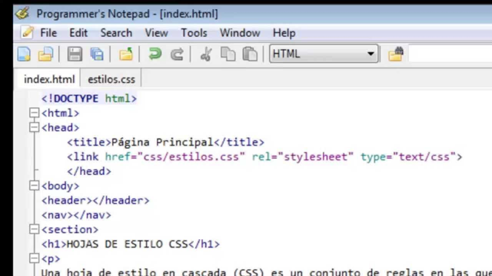

Conozcamos

1Conoces todo sobre Css?
CSS (Cascading Style Sheets - en español Hojas de Estilo en Cascadas) es usado para darle estilo y diseño a las páginas Web — por ejemplo, para cambiar la fuente de letra, color, tamaño y el espaciado de tu contenido; dividir en múltiples columnas, o agregar animaciones y otras propiedades decorativas. Este modulo provee un inicio suave para tu ruta de aprendizaje hacia el dominio de CSS con su funcionamiento básico, como luce su sintaxis, y cómo puedes comenzar a utilizarlo y añadir estilo a HTML "Aprendiendo sobre desarrollo web, primeros pasos en Css 8/12/2020".